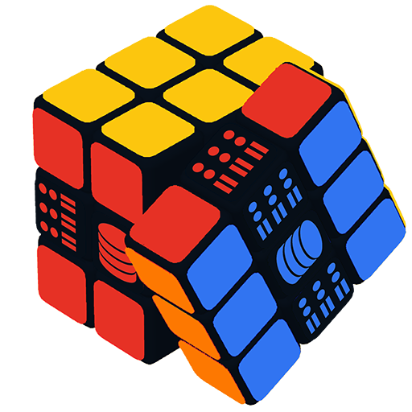

    <div class="flex h-screen w-screen overflow-hidden bg-bg-base text-tx-primary">

      <!-- ══ SIDEBAR ══════════════════════════════════════════ -->
      <aside class="flex flex-col w-[220px] flex-shrink-0 bg-bg-surface border-r border-border-subtle">

        <!-- Logo -->
        <div class="h-12 flex items-center px-4 gap-2.5 border-b border-border-subtle flex-shrink-0">
          
          <span class="text-sm font-semibold text-tx-primary tracking-tight">EnvHeaven</span>
        </div>

        <!-- Nav items -->
        <nav class="flex-1 px-2 py-3 space-y-0.5 overflow-y-auto">

          @for (item of navItems; track item.id) {
            <button
              class="w-full flex items-center gap-3 px-3 py-2 rounded-md text-sm nav-item"
              [class]="nav.currentView() === item.id
                ? 'bg-bg-raised text-tx-primary font-medium'
                : 'text-tx-secondary hover:text-tx-primary hover:bg-bg-hover'"
              (click)="navigate(item.id)">
              <span class="w-4 h-4 flex-shrink-0 flex items-center justify-center" [innerHTML]="item.icon"></span>
              {{ item.label }}
            </button>
          }

          <!-- Separator -->
          <div class="border-t border-border-subtle my-2"></div>

          <!-- Recent artifacts section -->
          @if (daemon.repos().length > 0) {
            <div class="px-3 py-1 text-[10px] font-semibold text-tx-muted uppercase tracking-wider">Recent</div>
            @for (repo of recentRepos(); track repo.id) {
              <button
                class="w-full flex items-center gap-2.5 px-3 py-1.5 rounded-md nav-item text-left"
                [class]="nav.selectedArtifactId() === repo.id && nav.currentView() === 'detail'
                  ? 'bg-bg-raised text-tx-primary'
                  : 'text-tx-secondary hover:text-tx-primary hover:bg-bg-hover'"
                (click)="openArtifact(repo.id)">
                <span class="w-1.5 h-1.5 rounded-full flex-shrink-0"
                      [class]="daemon.activeRepoPath() === repo.path ? 'bg-accent status-pulse' : 'bg-tx-disabled'"></span>
                <span class="text-xs truncate">{{ repo.name }}</span>
              </button>
            }
          }
        </nav>

        <!-- Daemon status strip (Docker Desktop style) -->
        <div class="px-4 py-3 border-t border-border-subtle flex-shrink-0">
          <div class="flex items-center gap-2">
            <div class="relative flex-shrink-0">
              <span class="w-2.5 h-2.5 rounded-full block"
                    [class]="daemon.isConnected() ? 'bg-accent' : daemon.error() ? 'bg-danger' : 'bg-warn'"></span>
              @if (daemon.isConnected()) {
                <span class="absolute inset-0 w-2.5 h-2.5 rounded-full bg-accent status-pulse opacity-60"></span>
              }
            </div>
            <div class="min-w-0 flex-1">
              <div class="text-[11px] font-medium text-tx-primary leading-tight">
                {{ daemon.isConnected() ? 'Daemon running' : daemon.error() ? 'Daemon offline' : 'Connecting...' }}
              </div>
              @if (daemon.status()?.daemon?.port) {
                <div class="text-[10px] text-tx-muted font-mono">localhost:{{ daemon.status()?.daemon?.port }}</div>
              }
              <div class="text-[10px] text-tx-disabled font-mono">UI v{{ uiVersion }}</div>
              <div class="text-[10px] text-tx-disabled font-mono">Daemon v{{ daemon.daemonVersion() ?? '–' }}</div>
            </div>
            <button class="w-5 h-5 flex items-center justify-center text-tx-muted hover:text-tx-secondary transition-colors flex-shrink-0"
                    title="Refresh"
                    (click)="daemon.refreshAll()">
              <svg class="w-3.5 h-3.5" fill="none" viewBox="0 0 24 24" stroke="currentColor" stroke-width="2">
                <path stroke-linecap="round" stroke-linejoin="round" d="M4 4v5h.582m15.356 2A8.001 8.001 0 004.582 9m0 0H9m11 11v-5h-.581m0 0a8.003 8.003 0 01-15.357-2m15.357 2H15"/>
              </svg>
            </button>
          </div>
        </div>
      </aside>

      <!-- ══ MAIN AREA ════════════════════════════════════════ -->
      <div class="flex flex-col flex-1 min-w-0 overflow-hidden">

        <!-- Topbar -->
        <header class="h-12 flex items-center px-5 gap-3 border-b border-border-subtle bg-bg-surface flex-shrink-0">

          <!-- Context switcher -->
          <div class="relative">
            <button
              class="flex items-center gap-2 px-3 py-1.5 rounded-md border border-border-default bg-bg-raised text-sm text-tx-primary hover:border-border-strong transition-colors max-w-[280px]"
              (click)="showContextDropdown.set(!showContextDropdown())">
              <svg class="w-3.5 h-3.5 text-tx-muted flex-shrink-0" fill="none" viewBox="0 0 24 24" stroke="currentColor" stroke-width="1.5">
                <path stroke-linecap="round" stroke-linejoin="round" d="M20 7l-8-4-8 4m16 0l-8 4m8-4v10l-8 4m0-10L4 7m8 4v10M4 7v10l8 4"/>
              </svg>
              <span class="truncate text-sm">{{ contextLabel() }}</span>
              <svg class="w-3.5 h-3.5 text-tx-muted flex-shrink-0 transition-transform" [class]="showContextDropdown() ? 'rotate-180' : ''" fill="none" viewBox="0 0 24 24" stroke="currentColor" stroke-width="2">
                <path stroke-linecap="round" stroke-linejoin="round" d="M19 9l-7 7-7-7"/>
              </svg>
            </button>

            <!-- Dropdown -->
            @if (showContextDropdown()) {
              <div class="context-dropdown absolute top-full left-0 mt-1 w-72 rounded-lg border border-border-strong bg-bg-overlay shadow-lg z-50 overflow-hidden">
                <div class="px-3 py-2 border-b border-border-subtle">
                  <p class="text-xs text-tx-muted font-semibold uppercase tracking-wider">Switch Context</p>
                </div>
                <div class="max-h-48 overflow-y-auto">
                  @for (repo of daemon.repos(); track repo.id) {
                    <button
                      class="w-full flex items-center gap-3 px-3 py-2.5 text-left hover:bg-bg-hover transition-colors"
                      (click)="switchContext(repo.id)">
                      <div class="w-6 h-6 rounded flex items-center justify-center flex-shrink-0"
                           [class]="daemon.activeRepoPath() === repo.path ? 'bg-accent-dim border border-accent-border' : 'bg-bg-raised border border-border-subtle'">
                        <svg class="w-3.5 h-3.5" [class]="daemon.activeRepoPath() === repo.path ? 'text-accent-light' : 'text-tx-muted'" fill="none" viewBox="0 0 24 24" stroke="currentColor" stroke-width="1.5">
                          <path stroke-linecap="round" stroke-linejoin="round" d="M20 7l-8-4-8 4m16 0l-8 4m8-4v10l-8 4m0-10L4 7m8 4v10M4 7v10l8 4"/>
                        </svg>
                      </div>
                      <div class="flex-1 min-w-0">
                        <div class="text-xs font-medium text-tx-primary truncate">{{ repo.name }}</div>
                        <div class="text-[10px] text-tx-muted font-mono truncate">{{ repo.path }}</div>
                      </div>
                      @if (daemon.activeRepoPath() === repo.path) {
                        <svg class="w-3.5 h-3.5 text-accent flex-shrink-0" fill="none" viewBox="0 0 24 24" stroke="currentColor" stroke-width="2.5">
                          <polyline points="20,6 9,17 4,12"/>
                        </svg>
                      }
                    </button>
                  }
                  @if (daemon.repos().length === 0) {
                    <div class="px-3 py-4 text-xs text-tx-muted text-center">No artifacts found</div>
                  }
                </div>
              </div>
              <!-- Backdrop -->
              <div class="fixed inset-0 z-40" (click)="showContextDropdown.set(false)"></div>
            }
          </div>

          <!-- Breadcrumb -->
          <div class="flex items-center gap-1.5 text-xs text-tx-muted">
            @if (nav.currentView() !== 'home') {
              <svg class="w-3 h-3" fill="none" viewBox="0 0 24 24" stroke="currentColor" stroke-width="2">
                <path stroke-linecap="round" stroke-linejoin="round" d="M9 5l7 7-7 7"/>
              </svg>
              <span>{{ breadcrumb() }}</span>
            }
          </div>

          <!-- Spacer -->
          <div class="flex-1"></div>

          <!-- Last refreshed -->
          @if (daemon.lastRefreshed()) {
            <span class="text-xs text-tx-disabled hidden sm:block">
              Updated {{ daemon.formatTimestamp(daemon.lastRefreshed()) }}
            </span>
          }

          <!-- Notification bell -->
          <div class="relative">
            <button
              class="relative w-8 h-8 flex items-center justify-center rounded-md text-tx-muted hover:text-tx-secondary hover:bg-bg-raised transition-colors"
              (click)="showNotifications.set(!showNotifications())">
              <svg class="w-4 h-4" fill="none" viewBox="0 0 24 24" stroke="currentColor" stroke-width="1.5">
                <path stroke-linecap="round" stroke-linejoin="round" d="M15 17h5l-1.405-1.405A2.032 2.032 0 0118 14.158V11a6.002 6.002 0 00-4-5.659V5a2 2 0 10-4 0v.341C7.67 6.165 6 8.388 6 11v3.159c0 .538-.214 1.055-.595 1.436L4 17h5m6 0v1a3 3 0 11-6 0v-1m6 0H9"/>
              </svg>
              @if (daemon.unreadCount() > 0) {
                <span class="absolute top-1 right-1 w-2 h-2 rounded-full bg-danger border border-bg-surface"></span>
              }
            </button>

            <!-- Notification panel -->
            @if (showNotifications()) {
              <div class="context-dropdown absolute top-full right-0 mt-1 w-80 rounded-lg border border-border-strong bg-bg-overlay shadow-lg z-50 overflow-hidden">
                <div class="px-4 py-2.5 border-b border-border-subtle flex items-center justify-between">
                  <span class="text-xs font-semibold text-tx-primary">Notifications</span>
                  <button class="text-xs text-tx-muted hover:text-tx-secondary transition-colors" (click)="daemon.markAllRead()">Mark all read</button>
                </div>
                <div class="max-h-72 overflow-y-auto">
                  @for (n of daemon.notifications(); track n.id) {
                    <div class="px-4 py-3 border-b border-border-subtle hover:bg-bg-hover transition-colors"
                         [class]="n.read ? 'opacity-60' : ''">
                      <div class="flex items-start gap-2.5">
                        <span class="w-2 h-2 rounded-full mt-1 flex-shrink-0"
                              [class]="n.kind === 'error' ? 'bg-danger' : n.kind === 'warn' ? 'bg-warn' : n.kind === 'success' ? 'bg-accent' : 'bg-info'"></span>
                        <div class="flex-1 min-w-0">
                          <div class="text-xs font-medium text-tx-primary">{{ n.title }}</div>
                          <div class="text-xs text-tx-muted mt-0.5">{{ n.message }}</div>
                          <div class="text-[10px] text-tx-disabled mt-1">{{ formatNotifTime(n.ts) }}</div>
                        </div>
                      </div>
                    </div>
                  }
                  @if (daemon.notifications().length === 0) {
                    <div class="px-4 py-8 text-center">
                      <p class="text-xs text-tx-muted">No notifications yet</p>
                    </div>
                  }
                </div>
                @if (daemon.notifications().length > 0) {
                  <div class="px-4 py-2.5 border-t border-border-subtle">
                    <button class="text-xs text-tx-muted hover:text-tx-secondary transition-colors" (click)="daemon.clearNotifications()">Clear all</button>
                  </div>
                }
              </div>
              <!-- Backdrop -->
              <div class="fixed inset-0 z-40" (click)="showNotifications.set(false)"></div>
            }
          </div>

          <!-- User indicator -->
          <div class="w-7 h-7 rounded-full bg-bg-overlay border border-border-default flex items-center justify-center flex-shrink-0">
            <svg class="w-3.5 h-3.5 text-tx-muted" fill="none" viewBox="0 0 24 24" stroke="currentColor" stroke-width="1.5">
              <path stroke-linecap="round" stroke-linejoin="round" d="M16 7a4 4 0 11-8 0 4 4 0 018 0zM12 14a7 7 0 00-7 7h14a7 7 0 00-7-7z"/>
            </svg>
          </div>
        </header>

        <!-- View content -->
        <main class="flex-1 overflow-hidden">
          @if (nav.currentView() === 'home') {
            <eh-home class="block h-full"></eh-home>
          }
          @if (nav.currentView() === 'artifacts') {
            <eh-artifacts-list class="block h-full"></eh-artifacts-list>
          }
          @if (nav.currentView() === 'detail') {
            <eh-artifact-detail class="block h-full"></eh-artifact-detail>
          }
          @if (nav.currentView() === 'settings') {
            <eh-settings class="block h-full"></eh-settings>
          }
        </main>
      </div>

    </div>
